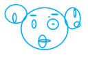

Īss spēles mērķa apraksts spēlētājam.
Varonis ir Raimonds.
Poga dod vairāk punktu.
Skaņa apzime dominēšanas līmeni.

Skaņas efekta nozīme spēlē:
Skaņu dzirdēsi kad dominēsi spēli.
Punkti: 0
Iegūsti punktus speižot pogu.